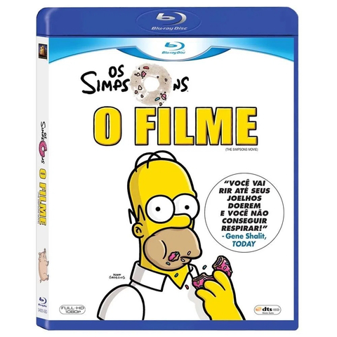
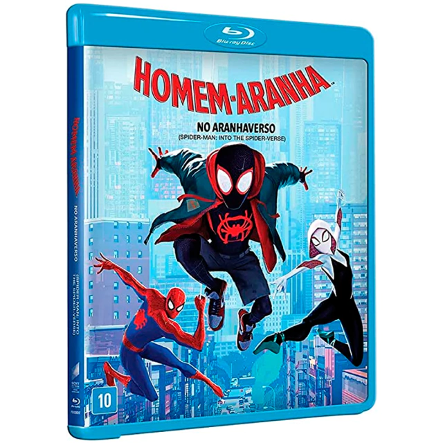
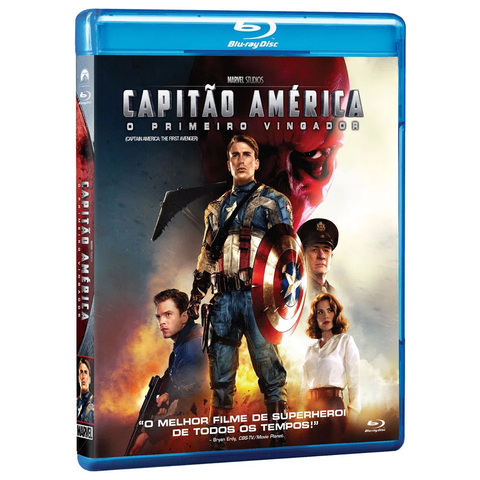
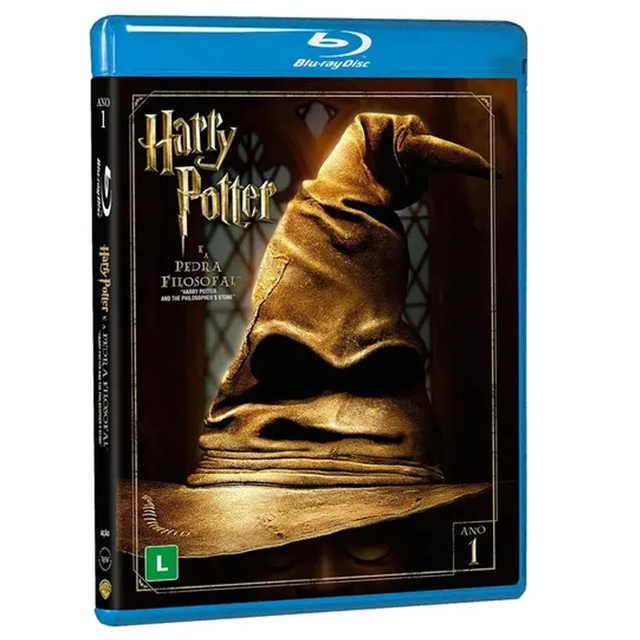

Os Simpsons - O Filme
Sinopse : Homer Simpson (Dan Castellaneta) tem um novo bicho de estimação: um porco. Devido a um silo perfurado e cheio de fezes, um desastre de grandes proporções acontece em Springfield. Isto faz com que uma multidão sedenta por vingança se reúna diante da casa dos Simpsons, querendo Homer e sua família de qualquer jeito. Eles conseguem escapar, mas a partir de então os Simpsons passam a discutir e se dividir sobre o ocorrido. Paralelamente o ocorrido chama a atenção do presidente dos Estados Unidos, Arnold Schwazenegger (Harry Shearer), e do chefe da Agência de Proteção Ambiental, Russ Cargill (Albert Brooks), que planeja realizar um plano diabólico para conter o desastre ocorrido.

Toy Story 3
Andy está se preparando para ir para a universidade, deixando seus leais brinquedos preocupados com o futuro incerto.

Homem Aranha: No Aranhaverso
Miles Morales é um jovem negro do Brooklyn que se tornou o Homem-Aranha inspirado no legado de Peter Parker, já falecido. Entretanto, ao visitar o túmulo de seu ídolo em uma noite chuvosa, ele é surpreendido com a presença do próprio Peter, vestindo o traje do herói aracnídeo sob um sobretudo. A surpresa fica ainda maior quando Miles descobre que ele veio de uma dimensão paralela, assim como outras versões do Homem-Aranha.

Homem-Aranha: Sem Volta Para Casa
Pela primeira vez na história dos filmes do Homem-Aranha, a identidade do amigo da vizinhança é revelada e isso coloca a vida de pessoas próximas em perigo. Esta é a origem de um conflito entre as responsabilidades do herói e sua vida particular. Para restabelecer seu segredo, ele pede ajuda ao Dr. Estranho. Porém, o feitiço do mago acaba liberando uma horda dos vilões mais poderosos que já lutaram com o Homem-Aranha em qualquer universo. Agora Peter irá enfrentar seu maior desafio que pode alterar não apenas seu próprio futuro, mas também todo o multiverso.
Capitão América - O Primeiro Vingador
Quando uma aterrorizante força ameaça a humanidade em todo o planeta, o maior soldado do mundo declara guerra contra a diabólica organização HYDRA, liderada pelo vilão Caveira Vermelha (Hugo Weaving).

Harry Potter E A Pedra Filosofal
Neste filme encantador, adaptado do mágico best-seller de J.K. Rowling, Harry Potter descobre, no seu 11º aniversário que é órfão de dois poderosos bruxos e que possui poderes mágicos. Na Escola de Magia e Bruxaria de Hogwarts, Harry embarca na maior aventura de toda sua vida. Ele aprende a jogar Quadribol, participa de uma emocionante partida de xadrez com peças vivas e enfrenta o Bruxo das Trevas. Para a mais extraordinária aventura espero você na Plataforma 9 3/4.
